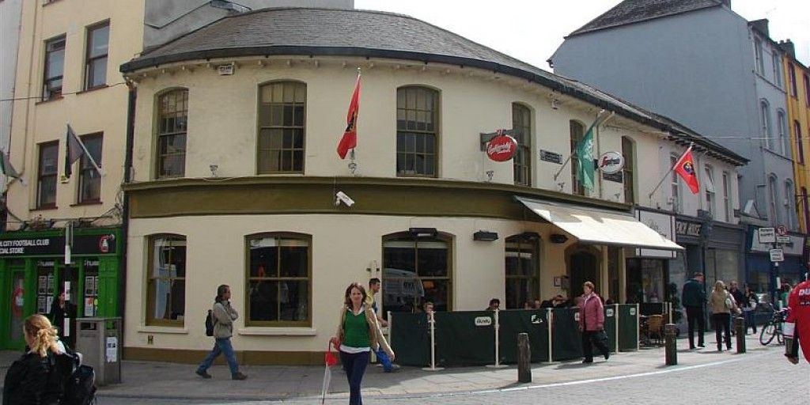

Sales
Oct 2018 - Present
On Saturday mornings I assist Caroline Robinson in setting up her stall and in the selling of her farm produce. I have also worked as a farmhand on Caroline and Eddie Robinsons farm in ************ (Cork)
Invigilator / Workshop assistant
Sep 2017 - Present
I occasionally cover shifts and and invigilate in the Crawford Art Gallery. I also work the busy nights throughout the year such as Culture night. Click the image below to go to their website!
Warehouse and Shop Assistant
Dec 2017 - Dec 2019
I occasionally work in the Bubble Brothers Shop in the English Market and at their warehouse in ****** ******. My duties include unpacking wine, stacking shelves and sales. Click the image below to go to their website!
Bar / Club work
The Roundy: Easter 2019 , Voodoo: Sep 2019 - Nov 2019
I got experience pulling pints and working behind the bar at The Roundy in Cork over Easter break 2019, I also worked floor staff in Voodoo night club in Cork
